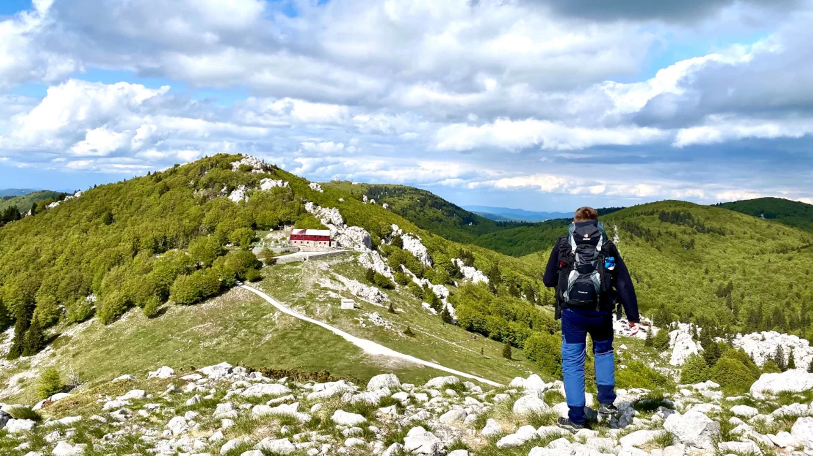

Sjeverni Velebit



Nacionalni park Sjeverni Velebit obuhvaća najsurovije i najdivljije dijelove velebitskog masiva. To je prostor planinskih grebena, krških ponikvi i visokih travnjaka, gdje se priroda doživljava u svom najčišćem obliku. Sjeverni Velebit je poznat po iznimnoj biološkoj raznolikosti i izrazito očuvanim staništima. Posjet ovom parku često ostavlja dojam tihe veličanstvenosti, jer je krajolik istovremeno skroman i grandiozan.
Jedan od najprepoznatljivijih dijelova parka je Premužićeva staza, planinarska ruta koja se smatra remek-djelom gradnje u kršu. Staza je oblikovana tako da slijedi prirodne konture terena, bez velikih uspona, što omogućuje ugodnu šetnju i stalne panoramske poglede. Dok se hoda, otvaraju se prizori prema moru i otocima, ali i prema unutrašnjosti planine. Ta kombinacija daljinskih pogleda i neposredne blizine krških formacija čini Premužićevu stazu jednim od najatraktivnijih doživljaja na Velebitu.
Krški reljef Sjevernog Velebita posebno je izražen. Ponikve, škrape i duboke jame oblikuju površinu i stvaraju prirodnu mrežu mikroklime. U takvim uvjetima nastaju raznolika staništa, pa se na malom prostoru može susresti velik broj biljnih vrsta. Park je poznat po endemima, posebno po velebitskoj degeniji, biljci koja raste samo u ovom području i postala je simbol hrvatske prirodne baštine.
Visinske razlike unutar parka stvaraju snažan kontrast između nižih šumskih zona i viših kamenih grebena. U nižim dijelovima dominiraju bukove i jelove šume, dok se na višim dijelovima nalaze planinske livade i kamenjari. Takav prijelaz omogućuje posjetiteljima da tijekom jedne šetnje dožive različite ekološke zone. Posebno je upečatljivo kako se vegetacija mijenja s nadmorskom visinom, a mirisi i boje postaju drugačiji.
Fauna Sjevernog Velebita također je iznimno bogata. U šumama obitavaju velike zvijeri poput medvjeda, vuka i risa, dok su na višim dijelovima prisutne planinske vrste ptica i kukaca. Iako se velike zvijeri rijetko viđaju, njihova prisutnost svjedoči o očuvanom ekosustavu. Za mnoge posjetitelje to je snažan osjećaj, jer znaju da se nalaze u prostoru gdje priroda ima primat.
Park je dio šireg velebitskog područja koje je poznato po čistoći zraka i posebnoj klimi. Zimi ovdje može biti vrlo hladno, s obiljem snijega, dok su ljeta svježa i ugodna. U proljeće i jesen planina dobiva posebne boje, a ugođaj je mirniji zbog manjeg broja posjetitelja. Svako doba godine nudi drugačiji doživljaj, pa se posjet može prilagoditi osobnim preferencijama.
Sjeverni Velebit je i prostor speleološke važnosti. Brojne jame i špilje svjedoče o dugotrajnom djelovanju vode u kršu. Neke od njih spadaju među najdublje u Europi, a istraživanja tih podzemnih prostora i danas traju. Iako većina posjetitelja ostaje na površini, svijest o postojanju podzemnih sustava daje dodatnu dimenziju krajoliku i naglašava njegovu slojevitost.
Planinarske staze u parku dobro su označene, ali priroda ostaje dominantna. Posjetitelji se potiču da poštuju pravila i kreću se samo označenim rutama, jer krški teren može biti zahtjevan i lako zbunjujuć. Dobra obuća, voda i priprema ključni su za ugodan i siguran boravak. Takav pristup omogućuje da se park doživi odgovorno i bez nepotrebnog rizika.
Osim planinarenja, park nudi i vrijedne edukativne sadržaje. Informativne ploče i interpretacijski sadržaji pomažu u razumijevanju geoloških procesa i biološke raznolikosti. Kroz te sadržaje posjetitelji uče o važnosti očuvanja krških područja, o osjetljivosti vegetacije i o tome kako se priroda obnavlja. Takvo znanje obogaćuje posjet i čini ga dubljim od pukog razgledavanja.
Sjeverni Velebit često se opisuje kao mjesto tišine. Velike prostrane površine, daleki pogledi i suptilni zvukovi vjetra stvaraju osjećaj smirenosti. Mnogi posjetitelji ovdje pronalaze prostor za odmor i refleksiju, daleko od gradskih zvukova i užurbanosti. Takav mir nije slučajan, već rezultat očuvane prirode i ograničenog utjecaja čovjeka.
U okolici parka nalaze se mala planinska naselja i tradicijski objekti, koji podsjećaju na nekadašnji život na planini. Suhozidi, pastirske staze i ljetni stanovi govore o generacijama ljudi koji su se prilagodili surovim uvjetima. Iako danas taj način života nije dominantan, tragovi su i dalje vidljivi i obogaćuju kulturnu sliku područja. Posjet parku stoga uključuje i susret s poviješću i tradicijom.
Sjeverni Velebit je i snažan simbol očuvane prirode u Hrvatskoj. Njegova zaštita pokazuje koliko je važno čuvati planinske ekosustave, ne samo zbog biološke raznolikosti, nego i zbog njihove uloge u klimatskoj ravnoteži i vodoopskrbi. Šume i travnjaci Velebita imaju važnu ulogu u zadržavanju vode i zaštiti tla. Posjet parku tako nosi i poruku o važnosti održivog odnosa prema prirodi.
Na velebitskim visoravnima mogu se vidjeti tragovi dugotrajnog oblikovanja krajolika. Vjetar, snijeg i sunce ustrajno oblikuju kamen, a male biljne zajednice pronalaze način kako opstati u pukotinama stijena. Takve slike podsjećaju na otpornost prirode i na to koliko je život prilagodljiv. Za posjetitelje to često postane inspirativan prizor, jer pokazuje da i na naizgled negostoljubivom terenu život može biti bogat i raznolik.
Planinarske ture često uključuju posjet Zavižanu, najpoznatijem planinskom području parka. Ondje se nalazi i meteorološka postaja, koja je najviša u Hrvatskoj, što dodatno naglašava specifičnost klime. Zavižan je poznat i po botaničkom vrtu u kojem se može upoznati bogatstvo velebitske flore. Ta kombinacija znanstvenih, edukativnih i prirodnih sadržaja čini ovaj dio parka važnim za razumijevanje planinskih ekosustava.
Posebna vrijednost Sjevernog Velebita je i osjećaj orijentacije u prostoru. Široki vidici omogućuju da se jasno sagleda struktura planine, a istovremeno se na horizontu vide otoci i more. Taj spoj planine i mora jedan je od najdojmljivijih elemenata parka i razlog zašto mnogi posjetitelji ističu upravo panorame kao najveći doživljaj. Pogledi se neprestano mijenjaju, pa svaka staza nudi novo iskustvo.
Za one koji vole fotografiju, Sjeverni Velebit nudi snažan kontrast svjetla i sjene. Kamenjari reflektiraju sunce, dok šumske udoline pružaju duboku sjenu i mir. U jutarnjim i večernjim satima pejzaž dobiva toplije tonove, a magla često stvara dodatnu atmosferu. Takvi prizori često su razlog zbog kojeg se posjetitelji vraćaju, tražeći različita lica iste planine.
Velebitski travnjaci i kamenjari važni su i za očuvanje oprašivača. Na visinama gdje nema mnogo velikih biljaka, cvjetnice postaju ključni izvor hrane za pčele, leptire i druge kukce. To je tihi, ali važan dio ekosustava, koji održava prirodnu ravnotežu i omogućuje raznolikost biljnog svijeta. Posjetitelji koji zastanu i promotre detalje često primijete taj skriveni život, što dodatno obogaćuje doživljaj.
U planini se jasno osjeća utjecaj vremena. Kratka promjena oblaka može donijeti hladnoću, a sunce se brzo vraća i ponovno zagrijava kamen. Taj ritam podsjeća da je Velebit živa planina, čiji se uvjeti stalno mijenjaju. Zbog toga se boravak na visinama doživljava intenzivnije, a svaki izlet postaje mali susret s prirodnim elementima.
Sjeverni Velebit je mjesto na kojem se uči strpljenju i pažnji. Kretanje po kamenjaru zahtijeva koncentraciju, a promatranje krajolika potiče na usporavanje. Ta sporost nije mana, već prednost, jer omogućuje da se primijete sitni detalji: tragovi životinja, razlika u boji stijena ili promjena u vegetaciji. Takvi trenuci stvaraju osjećaj duboke povezanosti s planinom i ostavljaju dugotrajan dojam.
Posjet parku često se pamti i po čistom, svježem zraku koji se osjeća već na prilazu. Ta svježina prati svaki korak i dodatno pojačava osjećaj odmora.
Za kraj, Sjeverni Velebit nudi doživljaj koji je istodobno jednostavan i snažan. Nema raskoši velikih jezera ili rijeka, ali ima nešto jednako vrijedno: osjećaj širine, čistog zraka i prirodne ravnoteže. Taj doživljaj ostaje dugo u sjećanju i često potiče na ponovno vraćanje. Sjeverni Velebit nije park koji se doživljava brzo, već mjesto koje se otkriva korak po korak.